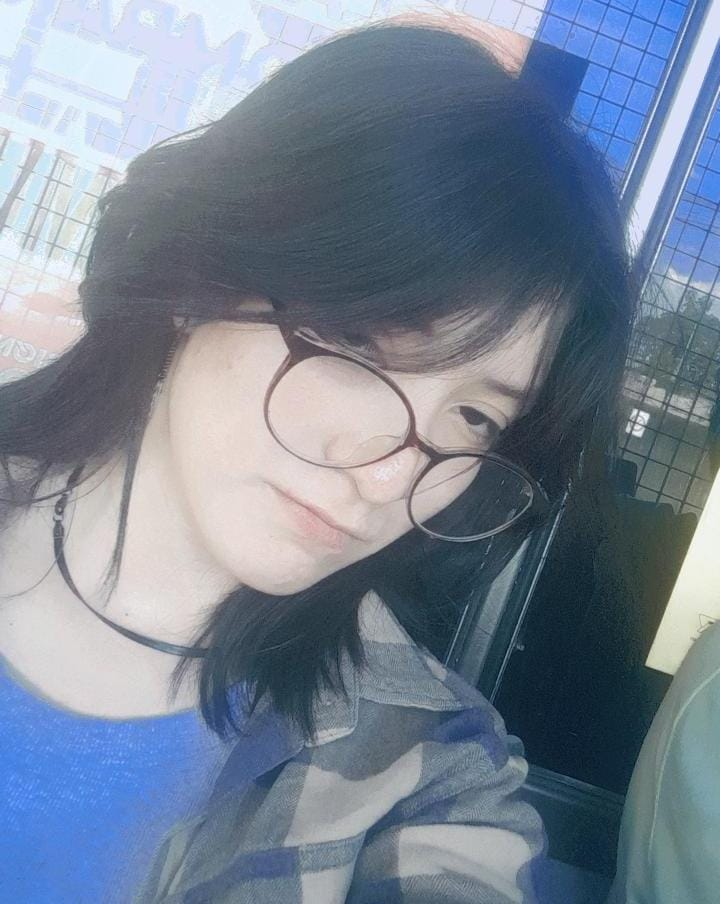

Mi presentación
Mi presentación
Buenos dias, tardes o noches, mi nombre es Jacqueline Dominguez Zagala, aunque la mayoria de la gente me llama Jack, esta es la presentacion de mi pagina web y en este apartado hablare de mi y de lo que complementa mi vida. Entre mis gustos, se encuentra el basquetball, el teatro y el dibujo, soy una persona a la que le apasiona mucho el arte, casi cualquier expresion artistica, adoro el cine de terror y mi franquicia favoita es la saga de chucky, adoro a los animales y mis animales favoritos son los lobos y los mapaches, y a veces me relacionan con los mapaches por mi personalidad o mi apariencia, cosa que me resulta gracioso, mi personaje favorito en general se podria decir que es spiderman, porque siempre ayuda a los demas sin pedir nada a cambio. Entre mis objetivos se encuentra el independizarme lo mas pronto posible, y academicamente aunque aun sigue en duda lo mas probable es que llegue a estudiar psicologia. Me considero una buena persona, o al menos alguien que trata de serlo, tambien me considero una persona bastante madura para mi edad y eso para mi es uno de mis logros. Se estar en soledad, y realmente no me molesta, la vida me ah obligado a saber estar sola, sin embargo una de las cosas que mas disfruto es estar en compañia de mis amigos cercanos. Considero que soy una persona muy torpe o que se equivoca bastante, aunque trato de mejorar cada dia. Tambien uno de mis defectos es que muchas veces mis emociones no me dejan actuar de la mejor forma posible, cosa que complica muchas veces mis interacciones con los demas. A lo largo de mi vida he aprendido bastante sobre las cosas que realmente son importantes en ella, por eso para mi de lo mas importante es el tener paz con uno mismo, cosa que trato de alcanzar al 100%. Igualmente para mi es importante la gente a mi alrededor, pero no exactamente toda, sino la gente que me ah apoyado a lo largo de mis tropiezos y de mis logros, la gente que de verdad me ama y lo demuestra, por eso suelo ser muy sobreprotectora con la gente que amo o muy cariñosa, cosa que no me apena. En fin, apenas tengo 15 años, sigo aprendiendo de la vida y de mis experiencias, porque faltan muchas mas, unas que atesorare y otras que aborrecere, pero todas formaran parte de lo que sere en un futuro, espero que eso sea una buena persona.
